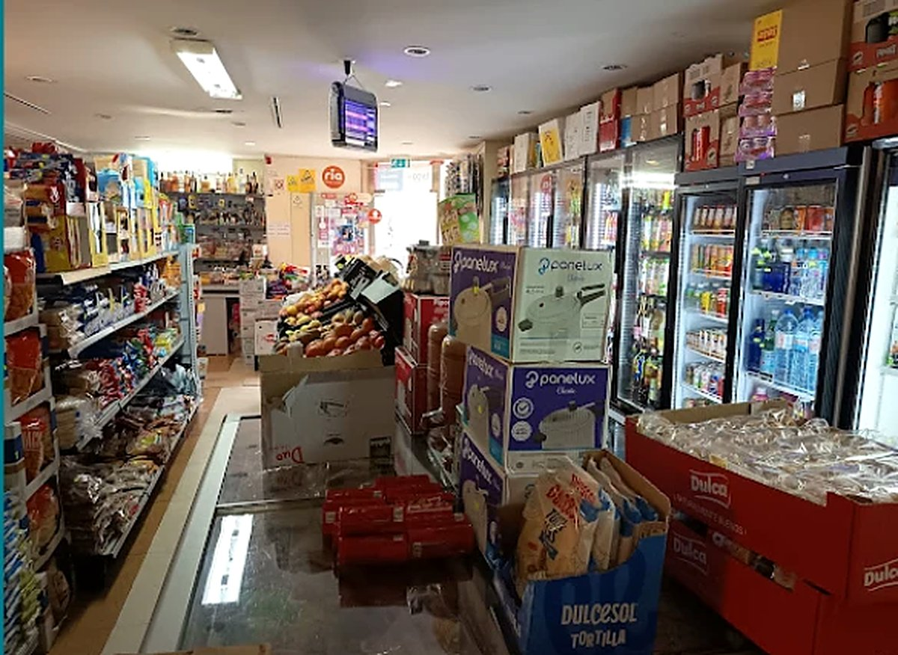
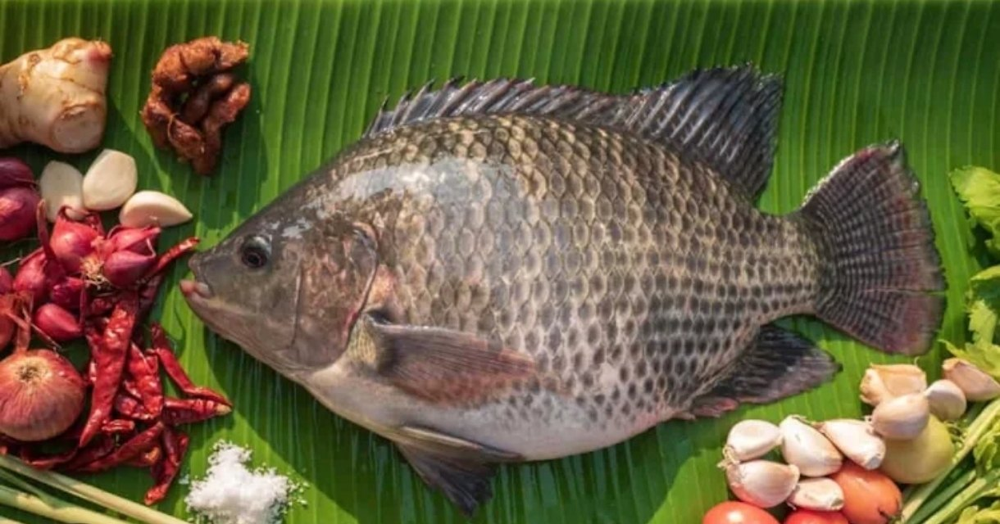
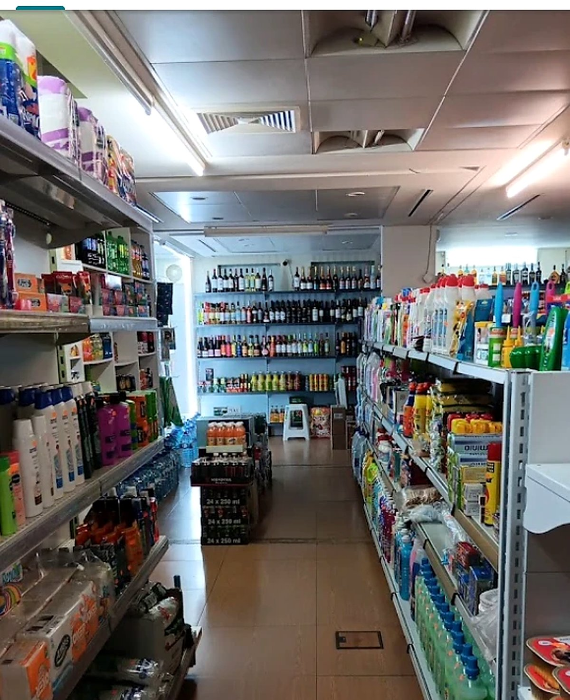
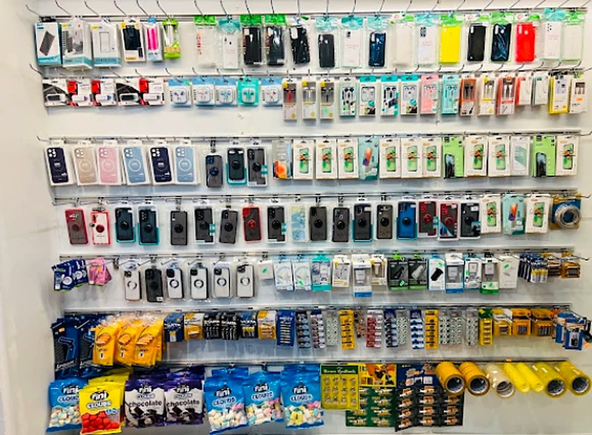
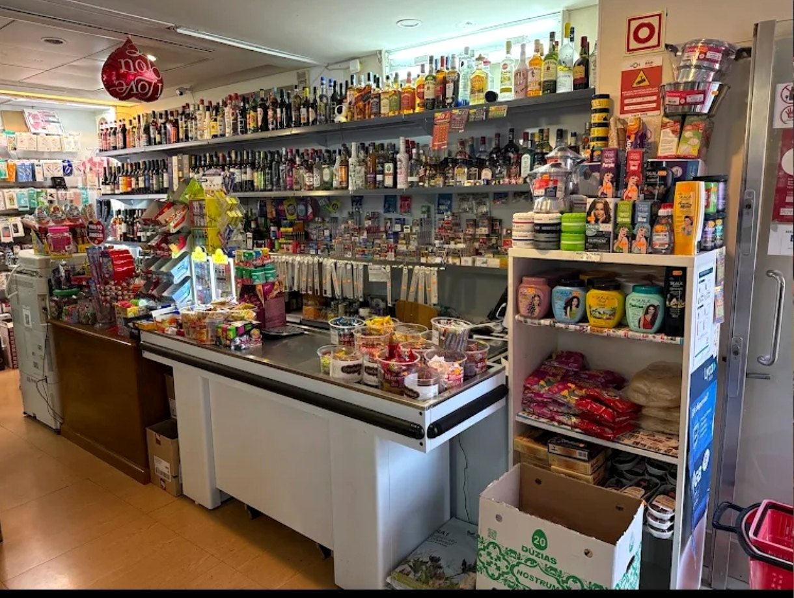
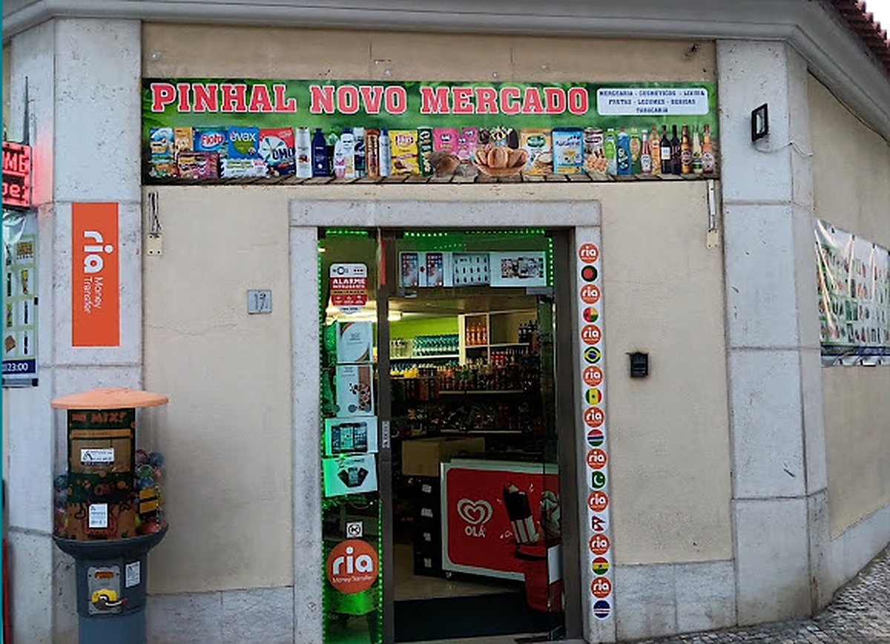

Quase tudo o que uma casa precisa, ao virar da esquina.Almost everything a home needs, round the corner.
Mercearia, cosméticos, limpeza, fruta e legumes, bebidas, tabacaria, acessórios de telemóvel e Ria Money Transfer. Em Pinhal Novo, ao lado do Pinhal Novo Restaurant.Groceries, cosmetics, cleaning, fruit and veg, drinks, tobacco, phone accessories and Ria Money Transfer. In Pinhal Novo, next to Pinhal Novo Restaurant.
MerceariaGrocery
O arroz, as leguminosas, as farinhas e as especiarias que faltam nos supermercados grandes — e o básico de todos os dias.The rice, pulses, flours and spices the big supermarkets don't carry — and the everyday basics.
- Arroz basmati e sona masooriBasmati and sona masoori rice
- Lentilhas, grão, feijãoLentils, chickpeas, beans
- Farinha atta, besan, semolinaAtta, besan, semolina flours
- Especiarias inteiras e moídasWhole and ground spices
- Óleo, ghee, leite de cocoOil, ghee, coconut milk
- Chá, açúcar, conservasTea, sugar, tinned goods
- Fruta e legumes frescosFresh fruit and vegetables
- Pão, bolos e bolachasBread, cakes and biscuits
Exemplos do que uma mercearia assim costuma ter — a lista confirma-se com o dono.Examples of what a grocery like this usually stocks — the list is confirmed with the owner.


PeixeFish
Tilápia inteira e o peixe que vai chegando durante a semana, com as especiarias e as malaguetas para o cozinhar como em casa.Whole tilapia and the fish that arrives through the week, with the spices and chillies to cook it the way you do at home.
- Tilápia inteiraWhole tilapia
- Outros peixes conforme a semanaOther fish depending on the week
- Gengibre, alho, chalotasGinger, garlic, shallots
- Malaguetas secas e masalasDried chillies and masalas
Variedade, fresco ou congelado e dias de chegada: a confirmar com o dono.Variety, fresh or frozen and delivery days: to be confirmed with the owner.

DrogariaHousehold
Limpeza, higiene e o papel que acaba sempre no domingo. Marcas conhecidas e formatos grandes.Cleaning, hygiene and the paper that always runs out on a Sunday. Known brands and family sizes.
- Detergentes da roupa e da loiçaLaundry and dish detergents
- Lixívia, multiusos, esfregõesBleach, all-purpose, sponges
- Papel higiénico e de cozinhaToilet and kitchen paper
- Champô, sabonete, pasta de dentesShampoo, soap, toothpaste
- Fraldas e toalhitasNappies and wipes
- Sacos do lixo, velas, pilhasBin bags, candles, batteries
Exemplos — a lista confirma-se com o dono.Examples — the list is confirmed with the owner.
TelemóvelPhone accessories
Ficou sem carregador, partiu a capa ou precisa de carregar o cartão? É aqui, sem ir à cidade.Lost your charger, broke your case or need a top-up? It's here, no trip to town.
- Capas e películasCases and screen protectors
- Cabos USB-C, Lightning, micro-USBUSB-C, Lightning, micro-USB cables
- Carregadores de parede e de carroWall and car chargers
- Auriculares e colunasEarphones and speakers
- Cartões SIM e carregamentosSIM cards and top-ups
- Pilhas e powerbanksBatteries and power banks
Exemplos — a lista e as operadoras confirmam-se com o dono.Examples — the list and carriers are confirmed with the owner.

Bebidas e snacksDrinks and snacks
Frescos no frigorífico, snacks para o caminho e os doces que se procuram e não se encontram noutro lado.Cold drinks in the fridge, snacks for the road, and the sweets you look for and can't find elsewhere.
- Refrigerantes, água, sumosSoft drinks, water, juices
- Lassi e bebidas de mangaLassi and mango drinks
- Batatas fritas, namkeen, bolachasCrisps, namkeen, biscuits
- Chocolates e doces indianosChocolates and Indian sweets
- Café, chá masalaCoffee, masala chai
- Gelados no verãoIce cream in summer
Exemplos — a lista confirma-se com o dono.Examples — the list is confirmed with the owner.
Não vê na prateleira? Pergunte ao balcão.Not on the shelf? Ask at the counter.
Muita coisa está lá atrás, e o que não há encomenda-se. É assim que uma loja de bairro funciona.A lot is kept out back, and what's missing can be ordered. That's how a neighbourhood shop works.
- Ria Money Transfer — envio de dinheiroRia Money Transfer — send money abroad
- TabacariaTobacco
- Gelados OláOlá ice cream
- Doces, pastilhas e snacksSweets, gum and snacks

Ao lado, o Pinhal Novo RestaurantNext door, Pinhal Novo Restaurant
Do mesmo dono. Caris, biryani, samosas, kebab roll e pizza — feitos com o que está nestas prateleiras. Para comer lá, levar, ou pedir pela Glovo.Same owner. Curries, biryani, samosas, kebab rolls and pizza — made with what's on these shelves. Eat in, take away, or order on Glovo.
Onde estamosFind us
